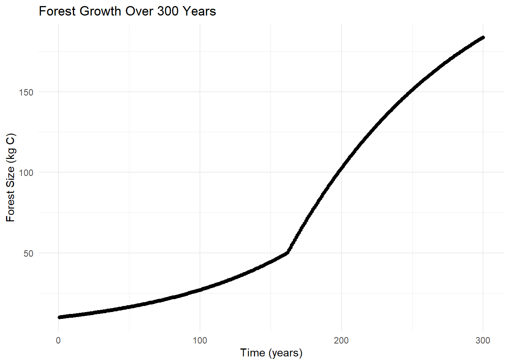
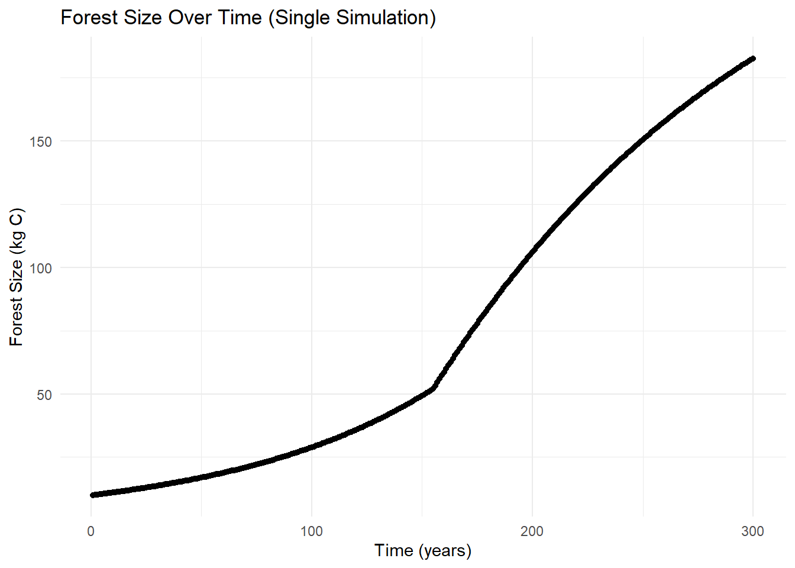
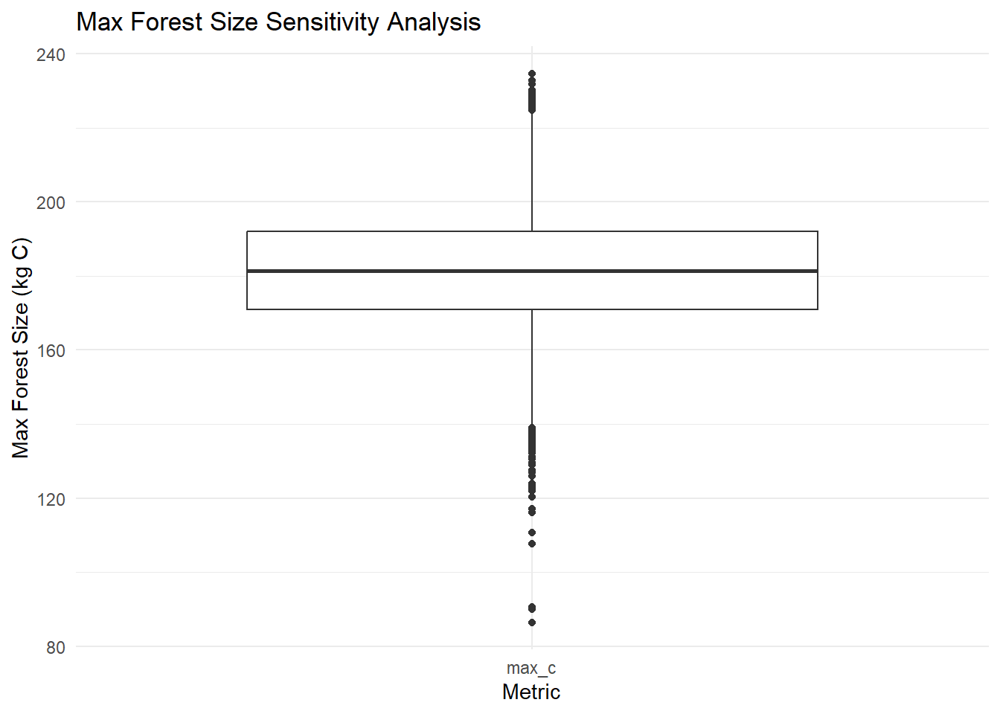
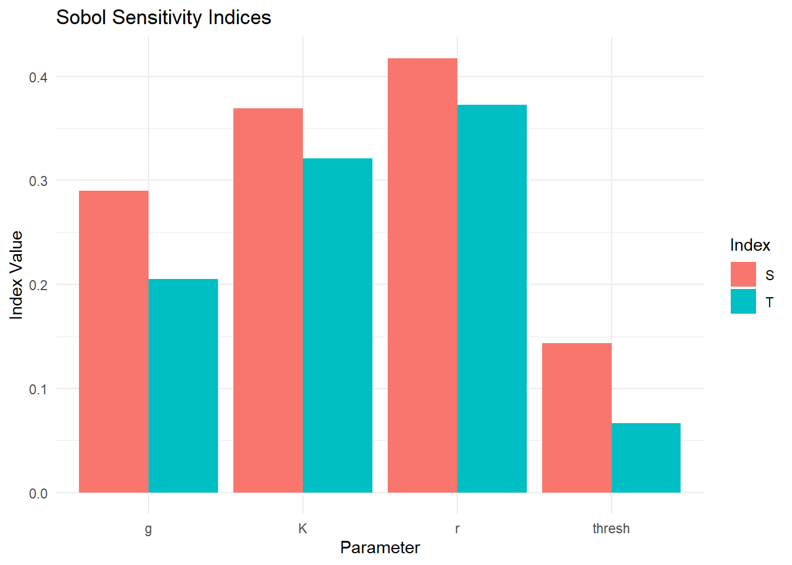

knitr::opts_chunk$set(echo = TRUE)sobol_ode_overbye
1. Load Required Libraries
# Load required packages for modeling, plotting, and file handling
library(tidyverse)Warning: package 'tidyverse' was built under R version 4.4.2── Attaching core tidyverse packages ──────────────────────── tidyverse 2.0.0 ──
✔ dplyr 1.1.4 ✔ readr 2.1.5
✔ forcats 1.0.0 ✔ stringr 1.5.1
✔ ggplot2 3.5.1 ✔ tibble 3.2.1
✔ lubridate 1.9.3 ✔ tidyr 1.3.1
✔ purrr 1.0.2
── Conflicts ────────────────────────────────────────── tidyverse_conflicts() ──
✖ dplyr::filter() masks stats::filter()
✖ dplyr::lag() masks stats::lag()
ℹ Use the conflicted package (<http://conflicted.r-lib.org/>) to force all conflicts to become errorslibrary(deSolve)
library(sensitivity)Warning: package 'sensitivity' was built under R version 4.4.3Registered S3 method overwritten by 'sensitivity':
method from
print.src dplyr
Attaching package: 'sensitivity'
The following object is masked from 'package:dplyr':
src
The following object is masked from 'package:tidyr':
extractlibrary(here)here() starts at D:/MEDS/eds-230-modeling/eds-230-modeling2. Load Model and Set Defaults
# Source the forest growth model
source(here("R", "forest_growth.R"))
# Initial conditions
Cinitial <- 10
simtimes <- seq(from = 1, to = 300)
# Default parameter values
parms <- list(r = 0.01, K = 250, g = 2, thresh = 50)
# Run ODE solver
results <- ode(y = Cinitial, times = simtimes, func = forest_growth, parms = parms)
colnames(results) <- c("time", "C") # Name output columns3. Plot Forest Growth Simulation
# Convert results to data frame and plot the time series
results <- as.data.frame(results)
ggplot(results, aes(time, C)) +
geom_point() +
labs(x = "Time (years)",
y = "Forest Size (kg C)",
title = "Forest Growth Over 300 Years") +
theme_minimal()
4. Generate Parameter Samples for Sobol Analysis
# Number of parameter samples
np <- 1000
# Sample each parameter from a normal distribution (10% SD)
r1 <- rnorm(mean = 0.01, sd = 0.001, n = np)
K1 <- rnorm(mean = 250, sd = 25, n = np)
g1 <- rnorm(mean = 2, sd = 0.2, n = np)
thresh1 <- rnorm(mean = 50, sd = 5, n = np)
X1 <- cbind.data.frame(r = r1, K = K1, g = g1, thresh = thresh1)
r2 <- rnorm(mean = 0.01, sd = 0.001, n = np)
K2 <- rnorm(mean = 250, sd = 25, n = np)
g2 <- rnorm(mean = 2, sd = 0.2, n = np)
thresh2 <- rnorm(mean = 50, sd = 5, n = np)
X2 <- cbind.data.frame(r = r2, K = K2, g = g2, thresh = thresh2)
# Ensure parameters are not negative
X1 <- X1 %>% map_df(pmax, 0.0)
X2 <- X2 %>% map_df(pmax, 0.0)5. Create Sobol Object
# Initialize Sobol sensitivity object using Saltelli method
sens_C <- sobolSalt(model = NULL, X1, X2, nboot = 300)
# Assign column names for clarity
colnames(sens_C$X) <- c("r", "K", "g", "thresh")
# Preview first few rows of sampled inputs
head(sens_C$X) r K g thresh
[1,] 0.010698562 267.3935 1.721639 52.03676
[2,] 0.008737207 242.3806 2.399030 61.51636
[3,] 0.010247413 292.6689 2.122258 53.10180
[4,] 0.009732289 254.8792 1.827050 47.23398
[5,] 0.011275322 279.7713 1.952036 50.44907
[6,] 0.010259127 246.0698 2.081703 51.433736. Run Example Simulation
# Extract one row of parameters for testing
parms <- list(
r = sens_C$X[1,"r"],
K = sens_C$X[1,"K"],
g = sens_C$X[1,"g"],
thresh = sens_C$X[1,"thresh"]
)
# Simulate using those parameters
result <- ode(y = Cinitial, times = simtimes, func = forest_growth, parms = parms)
colnames(result) <- c("time", "C")
result <- as.data.frame(result)
# Plot result for one simulation
ggplot(result, aes(time, C)) +
geom_point() +
labs(x = "Time (years)",
y = "Forest Size (kg C)",
title = "Forest Size Over Time (Single Simulation)") +
theme_minimal()
7. Define Metric and Wrapper Functions
# Function to compute the maximum forest size
max_c <- function(result) {
max(result$C) %>% list()
}
# Wrapper function to run the model and extract metric
wrapper <- function(K, g, r, thresh, Cinitial, simtimes, forest_growth_func, max_c_func) {
parms <- list(r = r, K = K, g = g, thresh = thresh)
result <- ode(y = Cinitial, times = simtimes, func = forest_growth_func, parms = parms, method = "euler")
colnames(result) <- c("time", "C")
metrics <- max_c_func(as.data.frame(result))
return(metrics)
}8. Test Wrapper on Default Parameters
# Quick test to confirm wrapper function works as expected
wrapper(
r = 0.01, K = 250, Cinitial = 10, simtimes = simtimes,
forest_growth_func = forest_growth, max_c_func = max_c,
g = 2, thresh = 50
)[[1]]
[1] 183.49489. Run Wrapper for All Parameter Sets
# Apply wrapper across all parameter combinations using pmap
allresults <- as.data.frame(sens_C$X) %>%
pmap(wrapper,
Cinitial = Cinitial,
simtimes = simtimes,
forest_growth_func = forest_growth,
max_c_func = max_c)
# Extract results into flat data frame
allres <- allresults %>% map_dfr(~ tibble(max_c = .x[[1]]))10. Plot Distribution of Output Metric
# Create boxplot of the output metric (max forest size)
tmp <- allres %>%
pivot_longer(cols = everything(), names_to = "max_forest", values_to = "value")
ggplot(tmp, aes(max_forest, value)) +
geom_boxplot() +
labs(title = "Max Forest Size Sensitivity Analysis",
x = "Metric",
y = "Max Forest Size (kg C)") +
theme_minimal()
11. Compute Sobol Indices
# Tell Sobol object what the output is
sens_C_maxsize <- sensitivity::tell(sens_C, allres$max_c)
# Assign row names for clarity
rownames(sens_C_maxsize$S) <- c("r", "K", "g", "thresh")
rownames(sens_C_maxsize$T) <- c("r", "K", "g", "thresh")
# View first-order and total-order effects
sens_C_maxsize$S original bias std. error min. c.i. max. c.i.
r 0.4176448 -0.002389308 0.03001752 0.35893029 0.4801920
K 0.3694306 0.001670207 0.03218949 0.30357940 0.4307415
g 0.2900317 0.001980422 0.03078096 0.23011701 0.3537388
thresh 0.1435467 0.001239954 0.03284023 0.07728139 0.2103223sens_C_maxsize$T original bias std. error min. c.i. max. c.i.
r 0.37277880 -1.799208e-03 0.023344513 0.32254649 0.41718155
K 0.32145517 1.360714e-03 0.023483994 0.27221146 0.36766576
g 0.20519279 3.435004e-04 0.014093304 0.17643478 0.23156484
thresh 0.06649992 -4.241239e-05 0.005034175 0.05571808 0.0751834312. Plot Sobol Sensitivity Indices
# Create tidy data frame for plotting indices
sobol_df <- data.frame(
Parameter = c("r", "K", "g", "thresh"),
S = sens_C_maxsize$S$original,
T = sens_C_maxsize$T$original
) %>%
pivot_longer(cols = c("S", "T"), names_to = "Index", values_to = "Value")
# Plot Sobol first-order and total-order indices
ggplot(sobol_df, aes(x = Parameter, y = Value, fill = Index)) +
geom_bar(stat = "identity", position = "dodge") +
labs(title = "Sobol Sensitivity Indices",
y = "Index Value",
x = "Parameter") +
theme_minimal()
Conclusion:
The K and r parameters were the most important towards forest growth in the last 300 years as shown in the plots above. This should be taken into account when making decisions about forest management, particularly when it comes to choosing when to cut down and prune trees.